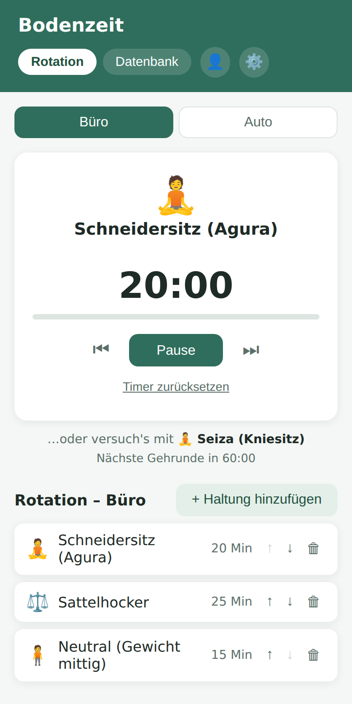
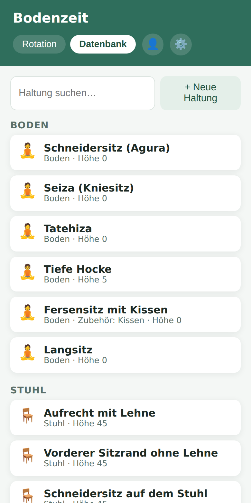
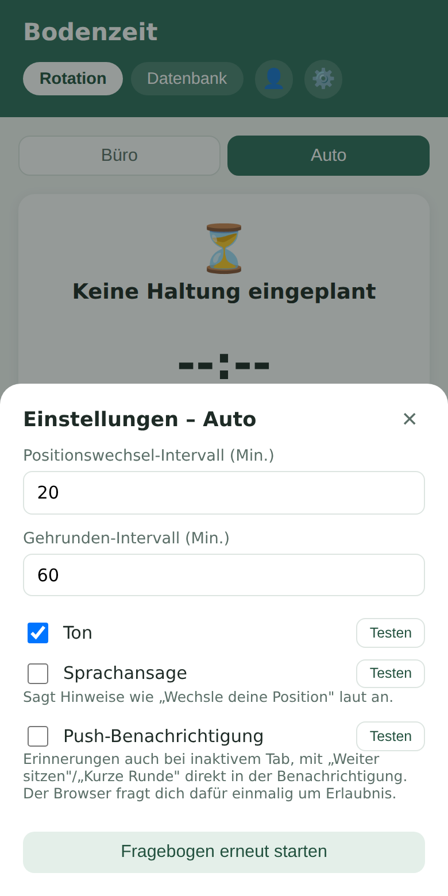

Rygsmerter på kontoret?
PostureShift takter skiftet mellem forskellige siddende, gulv- og ståstillinger på kontoret og i bilen — med indstillelige tider, en frit udvidelig stillingsdatabase og milde påmindelser. Løsningen er ikke én bestemt stilling, men det regelmæssige skift.
PostureShift er et bevægelses- og påmindelsesværktøj og erstatter ikke lægelig rådgivning, diagnose eller behandling. Ved vedvarende gener bør du kontakte en fagperson.
Baggrunden
"Sitting is the new smoking" er blevet en fast talemåde — og der ligger faktisk en del forskning bag. Et blik på de vigtigste kilder viser dog også: Det handler ikke om at forbyde det at sidde, men om hvordan vi sidder, og hvor ofte vi skifter stilling.
Udtrykket stammer fra Mayo Clinic-forskeren dr. James Levine. Et vigtigt grundlag for det leverede en undersøgelse fra Pennington Biomedical Research Center med data fra over 17.000 canadiere: Den fandt en sammenhæng mellem lange, uafbrudte daglige siddetider og en øget dødsrisiko — uafhængigt af, hvor sportsligt aktive personerne ellers var i deres fritid. Regelmæssige afbrydelser af siddetiden ser altså ud til at have en selvstændig effekt, som ren fritidsidræt alene ikke opvejer.
En hyppigt citeret undersøgelse af Raichlen, Pontzer og kolleger (PNAS, 2020) har undersøgt Hadza-folket, et jæger-samler-samfund i Tanzania, med bevægelsessensorer — og leveret en overraskende erkendelse: Hadza-folket sidder eller hviler samlet set næsten lige så længe som mennesker i industrilande. Forskellen ligger ikke i varigheden, men i stillingen. Hvilepositioner som dyb hugsiddende stilling eller knæsiddende holder ben- og kernemuskulaturen mærkbart mere aktiv end det at sidde på en stol. Forfatterne kalder det „Inactivity Mismatch Hypothesis": Vores krop er evolutionært tilpasset forskelligt aktive hvilestillinger — ikke til timevis af ubevægeligt siddende i en og samme stilling.
At stolen kun er én af mange løsninger, viser også kulturantropologien. Antropologen Gordon W. Hewes dokumenterede i sin hyppigt citerede undersøgelse af den globale udbredelse af hvilestillinger over 100 forskellige vanemæssige sidde- og hvilestillinger fra kulturer verden over — fra dyb hugsiddende stilling hos mange afrikanske og asiatiske folkegrupper til selvstændige knæsiddende former, f.eks. hos ainuerne i Japan, eller siddevaner hos nordamerikanske folkegrupper som kaska-folket i Canada. Kontorstolen, som vi kender den, er til sammenligning en ung og forholdsvis ensidig opfindelse.
Evolutionsbiologen Daniel Lieberman (Harvard), som i sin bog „Exercised" udførligt beskæftiger sig med netop denne forskning, advarer samtidig mod overdrivelse: At sidde er i sig selv en normal, altid gængs menneskelig adfærd og ikke skadelig i sig selv. Problematisk bliver det først og fremmest, når én enkelt stilling indtages uafbrudt over meget lange perioder.
Slap lidt af med hensyn til det at sidde ned. Ja, det er godt ikke at sidde hele dagen. Det er godt at bevæge sig — men vi bør ikke skræmme folk med noget så naturligt og normalt som at sidde. — frit efter Daniel Lieberman, „Exercised" (2021)
Netop den balance er tanken bag PostureShift: ikke at foreskrive én bestemt "rigtig" stilling, men regelmæssigt at skifte mellem forskelligt aktive positioner — i det tempo og med de stillinger, der passer til din hverdag.
Kilder
Katzmarzyk PT, Church TS, Craig CL, Bouchard C (2009): „Sitting Time and Mortality from All Causes, Cardiovascular Disease, and Cancer." Medicine & Science in Sports & Exercise 41(5). Pennington Biomedical Research Center, Auswertung der Canada Fitness Survey (n ≈ 17.000).
Raichlen DA, Pontzer H, et al. (2020): „Sitting, squatting, and the evolutionary biology of human inactivity." PNAS 117(13). pnas.org/doi/10.1073/pnas.1911868117
Hewes GW (1955): „World Distribution of Certain Postural Habits." American Anthropologist 57(2).
Lieberman DE (2021): „Exercised: The Science of Physical Activity, Rest and Health." Pantheon Books.
Løsningen
Kernen er ikke én bestemt stilling, men det taktfaste skift mellem flere. PostureShift giver dig en frit udvidelig stillingsdatabase og lader dig sammensætte din egen rotation ud fra den — tilpasset din konkrete kontorsituation.
Skrædderstilling, knæsiddende (seiza) og andre gulvstillinger aktiverer ben- og kernemuskulaturen mest — den stilling, der klarer sig bedst i forskningen.
Almindeligt siddende forbliver en del af rotationen — det afgørende er, at det ikke er den eneste stilling i timevis.
Sadelstole, vippestole og andre aktive siddemøbler holder kernemuskulaturen aktiv, selv når du sidder.
Ved ståbordet eller til den korte gåtur ind imellem — uden at et hæve-sænkebord er nødvendigt.
Gulvsiddende klarer sig bedst i forskningen — derfor fremhæver vi det. Men ikke alle kan eller vil gøre det på kontoret: tøj, pladsforhold, kolleger eller møblementet sætter ofte grænser. Derfor fungerer PostureShift lige så godt med en rotation, der udelukkende består af stol, barstol og stående — selve skiftet er den afgørende faktor, ikke én bestemt stilling.
Gulv, stol, barstol, aktive siddemøbler, stående, bil — forudfyldt og frit udvideligt med dine egne stillinger.
En positionstimer til stillingsskift og en gåtur-timer til en kort pause ind imellem — begge kan indstilles uafhængigt af hinanden.
Tre påmindelseskanaler, som hver kan slås til og fra separat — inklusive handlingsknapper direkte i push-notifikationen.
To uafhængige rotationer, hver med sin egen timer, egne indstillinger og eget onboarding-spørgeskema.
PostureShift kører helt lokalt på din enhed — kan bruges helt uden konto.
Med en gratis konto (login via magisk link, uden adgangskode) synkroniseres din rotation på tværs af enheder.



Annonce
PostureShift er gratis, kører direkte i din browser og kan installeres som en app.
Start gratis nuStøtte
Appen er gratis og forbliver det. Hvis du alligevel gerne vil støtte den videre udvikling, er du velkommen til at gøre det frivilligt — helt uden modydelse.